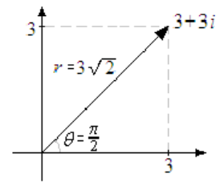
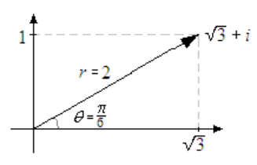
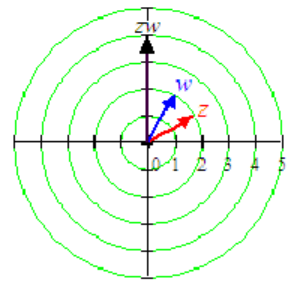
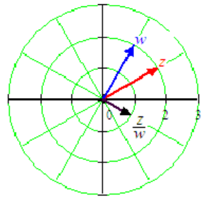
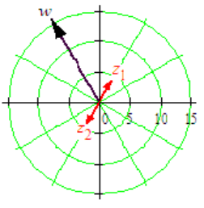
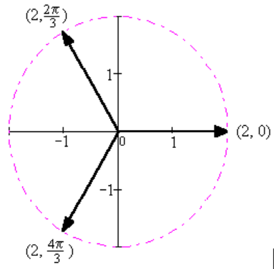

Subsection Polar Form
The figure below shows the complex number \(z=3+3i\text{,}\) represented as a vector in the complex plane. The distance \(r\) from the origin to \(z\) is
\begin{equation*}
r=\sqrt{3^2+3^2} = 3\sqrt{2}
\end{equation*}
and the angle from the real axis to the vector is \(\theta=\dfrac{\pi}{4}\text{.}\)
Using right triangle trigonometry, we see that \begin{align*} a \amp = 3\sqrt{2}\cos \dfrac{\pi}{4} = 3\sqrt{2} \cdot \dfrac{1}{\sqrt{2}} = 3\\ b \amp = 3\sqrt{2} \sin \dfrac{\pi}{4} = 3\sqrt{2} \cdot \dfrac{1}{\sqrt{2}} = 3\\ \end{align*}

In general, we can write the real and imaginary parts of \(z\) in terms of \(r\) and \(\theta\) as
\begin{equation*}
a=r \cos \theta~~~~\text{and}~~~~b=r\sin \theta
\end{equation*}
Thus, the complex number \(z=a+bi\) can also be written as \(z=(r\cos\theta)+(r\sin \theta)i\text{,}\) or \(z=r(\cos\theta+i\sin \theta)\text{.}\)
Example 10.62
Find the polar form for \(z=\sqrt{3} + i\text{.}\)
Solution
We compute
\begin{equation*}
r=\sqrt{a^2+b^2} = \sqrt{3+1} = 2~~~~\text{and}~~~~\tan \theta = \dfrac{1}{\sqrt{3}}
\end{equation*}
The angle \(\theta\) is in the first quadrant, so
\begin{equation*}
\theta = \tan^{-1} \dfrac{1}{\sqrt{3}} = \dfrac{\pi}{6}
\end{equation*}
Thus,
\begin{equation*}
z= 2(\cos \dfrac{\pi}{6} + i\sin \dfrac{\pi}{6})
\end{equation*}
The graph of \(z\) is shown at right.

Polar Form for a Complex Number
The complex number \(z=a+bi\) can be written in the polar form
\begin{equation*}
z=r(\cos\theta+i\sin \theta)
\end{equation*}
where
\begin{equation*}
r=\sqrt{a^2+b^2}
\end{equation*}
and \(\theta\) is defined by
\begin{equation*}
a=r \cos \theta,~~~~b=r\sin \theta,~~~~0 \le \theta \le 2\pi
\end{equation*}
The angle \(\theta\) is called the argument of the complex number, and \(r\) is its length, or modulus.
Checkpoint 10.63
Find the polar form for \(w=1+i\sqrt{3}\text{.}\)
Of course, we can always recover the Cartesian form of a complex number from its polar form by evaluating the trigonometric functions. We'll check the result of the previous example: \begin{align*} z \amp = 2(\cos \dfrac{\pi}{6} + i\sin \dfrac{\pi}{6})\\ \amp = 2(\dfrac{\sqrt{3}}{2} + i \cdot \dfrac{1}{2} = \sqrt{3} + i\\ \end{align*}
Subsection Products and Quotients in Polar Form
The polar form is especially convenient for computing the product or quotient of two complex numbers.
Product in Polar Form
If \(z_1=r(\cos \alpha+i\sin \alpha)\) and \(z_2=R(\cos \beta+i\sin \beta)\text{,}\) then
\begin{equation*}
z_1z_2=rR(\cos (\alpha + \beta) + i \sin (\alpha + \beta))
\end{equation*}
This formula, which you will prove in the Homework Problems, says that the product of two complex numbers in polar form is the complex number with modulus \(rR\) and argument \(\alpha + \beta\) Thus, to find the product of two complex numbers, we multiply their lengths and add their arguments.
Example 10.64
Find the product of \(z= 2(\cos \dfrac{\pi}{6} + i\sin \dfrac{\pi}{6})\) and \(w= 2(\cos \dfrac{\pi}{3} + i\sin \dfrac{\pi}{3})\text{.}\)
Solution
We multiply the moduli, \(2 \cdot 2 =4\text{,}\) and add the arguments, \(\dfrac{\pi}{6}+\dfrac{\pi}{3} = \dfrac{\pi}{2}\text{.}\) The polar form of the product is thus
\begin{equation*}
zw=4(\cos \dfrac{\pi}{2} + i\sin \dfrac{\pi}{2}) = 4i
\end{equation*}
Note that \(z\) and \(w\) are the numbers from the previous example and exercise, namely \(z=\sqrt{3} + i\) and \(w=1+i\sqrt{3}\text{.}\) You can compute the product \(zw\) in Cartesian form to check that you get the same result, \(4i\text{.}\)
The figure at right shows the graphs of \(z\) and \(w\text{,}\) and their product, \(zw\text{.}\) You can see that multiplying \(z\) by \(w\) rotates the graph of \(z\) by the argument of \(w\text{,}\) namely \(\dfrac{\pi}{3}\) or \(60\degree\text{.}\)

Checkpoint 10.65
- Find the polar forms of \(z=3+3i\) and \(w=-2+2i\text{.}\)
- Compute the product \(zw\text{.}\)
The quotient of two complex numbers in polar form is computed in a similar fashion.
Quotient in Polar Form
If \(z_1=r(\cos \alpha+i\sin \alpha)\) and \(z_2=R(\cos \beta+i\sin \beta)\text{,}\) then
\begin{equation*}
\dfrac{z_1}{z_2}=\dfrac{r}{R}(\cos (\alpha - \beta) + i \sin (\alpha - \beta))
\end{equation*}
Example 10.66
Find the quotient of \(z= 2(\cos \dfrac{\pi}{6} + i\sin \dfrac{\pi}{6})\) and \(w= 2(\cos \dfrac{\pi}{3} + i\sin \dfrac{\pi}{3})\text{.}\)
Solution
We divide the moduli, \(\dfrac{2}{2} = 1\text{,}\) and subtract the arguments, \(\dfrac{\pi}{6}-\dfrac{\pi}{3} = \dfrac{-\pi}{6}\text{.}\)
The polar form of the quotient is thus
\begin{equation*}
\dfrac{z}{w}=1(\cos \dfrac{-\pi}{6} + i\sin \dfrac{-\pi}{6})=\dfrac{\sqrt{3}}{2} - \dfrac{1}{2} i
\end{equation*}
The figure at right shows the graphs of \(z,~w\text{,}\) and the quotient \(\dfrac{z}{w}\text{.}\)

Checkpoint 10.67
Compute the quotient \(\dfrac{z}{w}\) for \(z=3+3i\) and \(2=-2+2i\text{.}\)
Subsection Powers and Roots of Complex Numbers
Because raising to a power is just repeated multiplication, we can also use the polar form to simplify powers of a complex number. For example, if \(z=r(\cos\alpha+i\sin \alpha)\text{,}\) then
\begin{equation*}
z^2=z \cdot z = r \cdot r(\cos(\alpha+ \alpha) +i\sin (\alpha + \alpha))
\end{equation*}
We compute \(z^2\) by squaring the modulus, \(r\text{,}\) and doubling the argument, \(\alpha\text{,}\) so the polar form is
\begin{equation*}
z^2= r^2(\cos 2\alpha+i\sin 2\alpha)
\end{equation*}
An analogous result holds for all positive integers \(n\text{,}\) and is known as De Moivre's Theorem.
De Moivre's Theorem
If \(z=r(\cos\alpha+i\sin \alpha)\) is a complex number in polar form, and \(n\) is a positive integer, then
\begin{equation*}
z^n= r^n(\cos n\alpha+i\sin n\alpha)
\end{equation*}
Example 10.68
Raise \(z=\sqrt{3} + i\) to the fourth power.
SolutionWe use the polar form, \(z= 2(\cos \dfrac{\pi}{6} + i\sin \dfrac{\pi}{6})\text{,}\) and apply De Moivre's theorem. Then \begin{align*} z^4 \amp = 2^4(\cos 4 \cdot \dfrac{\pi}{6}+i\sin 4 \cdot \dfrac{\pi}{6})\\ \amp=16(\cos \dfrac{2\pi}{3} + i\sin \dfrac{2\pi}{3})\\ \end{align*} The Cartesian form of \(z^4\) is thus \(16(\dfrac{-1}{2} + i\dfrac{\sqrt{3}}{2})\text{,}\) or \(-8+8i\sqrt{3}\text{.}\) You can check that you get this same result if you compute \((\sqrt{3} + i)^4\) by expanding the power.
Checkpoint 10.69
Compute \(w^3\text{,}\) for \(w=-\sqrt{2}+\sqrt{2}i\text{.}\)
DeMoivre's Theorem also works for fractional values of \(n\text{,}\) so we can compute roots of complex numbers. For example, by applying the theorem with \(n=\dfrac{1}{2}\text{,}\) we see that one of the square roots of \(z=r(\cos\alpha+i\sin \alpha)\) is
\begin{equation*}
z^{1/2}=r^{1/2}(\cos \dfrac{\alpha}{2}+i\sin \dfrac{\alpha}{2})
\end{equation*}
Now, every number,whether real or complex, has two square roots. To find the other root, remember that we can add a multiple of \(2\pi\) to the argument of \(z\text{,}\) that is, we can also write the polar form of \(z\) as
\begin{equation*}
z=r(\cos(\alpha+2\pi)+i\sin (\alpha+2\pi))
\end{equation*}
The second square root of \(z\) is thus
\begin{equation*}
r^{1/2}(\cos (\dfrac{\alpha}{2}+\pi)+i\sin (\dfrac{\alpha}{2}+\pi)
\end{equation*}
As an example consider \(w=-8+8i\sqrt{3},\) whose polar form is \(16(\cos \dfrac{2\pi}{3} + i\sin \dfrac{2\pi}{3})\text{,}\) or by adding \(2\pi\) to the argument, \(16(\cos \dfrac{8\pi}{3} + i\sin \dfrac{8\pi}{3})\text{.}\) The two square roots of \(w\) are \begin{align*} z_1 \amp = 16^{1/2}(\cos \dfrac{\pi}{3} + i\sin \dfrac{\pi}{3})=4(\dfrac{1}{2} + i\dfrac{\sqrt{3}}{2}) = 2+2i\sqrt{3}\\ z_2\amp=16^{1/2}(\cos \dfrac{4\pi}{3} + i\sin \dfrac{4\pi}{3})=4(\dfrac{-1}{2} + i\dfrac{-\sqrt{3}}{2}) = -2-2i\sqrt{3}\\ \end{align*}
You can verify that both of these numbers are square roots of \(w=-8+8i\sqrt{3}\text{,}\) for instance, \begin{align*} (2+2i\sqrt{3})^2 \amp = 4+2(2)(2i\sqrt{3})+12i^2\\ \amp=-8+8i\sqrt{3}\\ \end{align*} The graphs of \(w\) and its two square roots are shown at right.

It is not hard to show that every number has three complex cube roots, four complex fourth roots, and so on.
Example 10.70
Find three complex cube roots of \(8\text{.}\)
Solution
One polar form of \(z=8\) is
\begin{equation*}
z=8(\cos 0 + i \sin 0)
\end{equation*}
so one of its cube roots is
\begin{equation*}
z_1=8^{1/3}(\cos \dfrac{0}{3} + i \sin \dfrac{0}{3}) = 2(\cos 0 + i \sin 0) = 2
\end{equation*}
But by adding multiples of \(2\pi\) to the argument, we can also write the polar form of as
\begin{equation*}
z=8(\cos 2\pi + i \sin 2\pi)~~~~\text{and}~~~~z=8(\cos 4\pi + i \sin 4\pi)
\end{equation*}
Applying De Moivre's theorem to each of these expressions gives us two more cube roots \begin{align*} z_2 \amp = 2(\cos \dfrac{2\pi}{3} + i\sin \dfrac{2\pi}{3}) = \dfrac{-1}{2}+i\sqrt{3}\\ z_3 \amp= 2(\cos \dfrac{4\pi}{3} + i\sin \dfrac{4\pi}{3})= \dfrac{-1}{2}-i\sqrt{3}\\ \end{align*}
The three roots are shown at right. Note that they are evenly spaced around a circle of radius 2. You can check that adding further muliples of \(2\pi\) to the argument does not generate any new cube roots.

Roots of a Complex Number
A complex number \(z=r(\cos \alpha + i\sin \alpha)\) in polar form has \(n\) complex \(n\)th roots, given by
\begin{equation*}
z_k = r^{1/n}(\cos \dfrac{\alpha + 2\pi k}{n} + i\sin \dfrac{\alpha + 2\pi k}{n}
\end{equation*}
for \(k = 0,~1,~2, \cdots,~ n-1\text{.}\)
Checkpoint 10.71
- Write \(i\) in polar form.
- Find four complex fourth roots of \(i\text{.}\)
Subsection Homework 10-4
¶
For Problems 1-4, simplify and plot each complex number as a point on the complex plane.
1
\(1,~i,~i^2,~i^3\) and \(i^4\)
2
\(-1,~-i,~-i^2,~-i^3\) and \(-i^4\)
3
\(1+2i\) and \(i(1+2i)\)
4
\(3-4i\) and \(i(3-4i)\)
For Problems 5-8, write the complex numbers in standard form. Give exact values for your answers.
5
\(6(\cos \dfrac{2\pi}{3} + i\sin \dfrac{2\pi}{3})\)
6
\(4(\cos \dfrac{7\pi}{4} + i\sin \dfrac{7\pi}{4})\)
7
\(\sqrt{2}(\cos \dfrac{3\pi}{4} + i\sin \dfrac{3\pi}{4})\)
8
\(\dfrac{3}{2}(\cos \dfrac{5\pi}{6} + i\sin \dfrac{5\pi}{6})\)
For Problems 9-12, write the complex numbers in standard form. Round your answers to hundredths.
9
\(5(\cos 5.2 + i\sin 5.2)\)
10
\(3(\cos 3.5 + i\sin 3.5)\)
11
\(12(\cos 115\degree + i\sin 115\degree)\)
12
\(20(\cos 250\degree + i\sin 250\degree)\)
For Problems 13-16, write the complex numbers in polar form. Give exact values for your answers.
13
\(3i\) and \(-3i\)
Answer\(3(\cos \dfrac{\pi}{2} + i\sin \dfrac{\pi}{2}),~3(\cos \dfrac{3\pi}{2} + i\sin \dfrac{3\pi}{2})\)
14
\(2+2i\) and \(2-2i\)
15
\(-3-\sqrt{3}i\) and \(3-\sqrt{3}i\)
Answer\(2\sqrt{3}(\cos \dfrac{7\pi}{6} + i\sin \dfrac{7\pi}{6}),~2\sqrt{3}(\cos \dfrac{11\pi}{6} + i\sin \dfrac{11\pi}{6})\)
16
\(2\sqrt{3}+2i\) and \(-2\sqrt{3}+2i\)
For Problems 17-22, write the complex numbers in polar form. Round your answers to hundredths.
17
\(-4+2i\) and \(4-2i\)
Answer\(4.47(\cos 2.68 + i\sin 2.68),~4.47(\cos 5.82 + i\sin 5.82)\)
18
\(-3-8i\) and \(3+8i\)
19
\(9-5i\) and \(9+5i\)
Answer\(8.60(\cos 5.78 + i\sin 5.78),~8.60(\cos 0.51 + i\sin 0.51)\)
20
\(2+6i\) and \(2-6i\)
21
\(3+4i,~ 3-4i,~ -3+4i,\) and \(-3-4i\)
Answer\(5(\cos 0.93 + i\sin 0.93),~5(\cos 5.36 + i\sin 5.36),~5(\cos 2.21 + i\sin 2.21),~5(\cos 4.07 + i\sin 4.07)\)
22
\(1+3i,~ 1-3i,~ -1+3i,\) and \(-1-3i\)
23
What can you conclude about the polar forms of \(z\) and \(\bar{z}\text{?}\)
AnswerIf \(z=r(\cos \theta+ i\sin \theta),\) then \(\bar{z}=r(\cos (2\pi -\theta) + i\sin (2\pi -\theta)\)
24
What can you conclude about the polar forms of \(z\) and \(-z\text{?}\)
For Problems 25-28, find the product \(z_1z_2\) and the quotient \(\dfrac{z_1}{z_2}\text{.}\)
25
\(z_1=4(\cos \dfrac{4\pi}{3} + i\sin \dfrac{4\pi}{3})\)\(z_2=\dfrac{1}{2}(\cos \dfrac{5\pi}{6} + i\sin \dfrac{5\pi}{6})\)
Answer\(z_1z_2 = 2(\cos \dfrac{\pi}{6} + i\sin \dfrac{\pi}{6}) = \sqrt{3} + i;~~\dfrac{z_1}{z_2}=8(\cos \dfrac{\pi}{2} + i\sin \dfrac{\pi}{2}) = 8i\)
26
\(z_1=6(\cos \dfrac{5\pi}{8} + i\sin \dfrac{5\pi}{8})\)\(z_2=\dfrac{3}{2}(\cos \dfrac{\pi}{8} + i\sin \dfrac{\pi}{8})\)>
27
\(z_1=3(\cos \dfrac{3\pi}{5} + i\sin \dfrac{3\pi}{5})\)\(z_2=2(\cos \dfrac{3\pi}{10} + i\sin \dfrac{3\pi}{10})\)
Answer\(z_1z_2 = 6(\cos \dfrac{9\pi}{10} + i\sin \dfrac{9\pi}{10});~~\dfrac{z_1}{z_2}=\dfrac{3}{2}(\cos \dfrac{3\pi}{10} + i\sin \dfrac{3\pi}{10})\)
28
\(z_1=4(\cos \dfrac{5\pi}{12} + i\sin \dfrac{5\pi}{12})\)\(z_2=6(\cos \dfrac{3\pi}{4} + i\sin \dfrac{3\pi}{4})\)
For Problems 29-32, convert the complex number to polar form, then find the product \(z_1z_2\) and the quotient \(\dfrac{z_1}{z_2}\text{.}\)
29
\(z_1=2i,~z_2=4i\)
Answer\(z_1z_2 = 8;~~\dfrac{z_1}{z_2}=\dfrac{1}{2}\)
30
\(z_1=-2i,~z_2=3i\)
31
\(z_1=2\sqrt{3}-2i,~z_2=-1+i\)
Answer\(z_1z_2 = 4\sqrt{2}(\cos \dfrac{7\pi}{12} + i\sin \dfrac{7\pi}{12});~~\dfrac{z_1}{z_2}=2\sqrt{2}(\cos \dfrac{13\pi}{12} + i\sin \dfrac{13\pi}{12})\)
32
\(z_1=\sqrt{3}+i,~z_2=-1+\sqrt{3}\)
For Problems 33-38, find the power.
33
\((2+2i)^5\)
34
\((\sqrt{2}-\sqrt{2}i)^6\)
35
\((-1+\sqrt{3}i)^8\)
36
\((\dfrac{1}{2}+\dfrac{\sqrt{3}}{2}i)^{12}\)
37
\((\sqrt{3}-i)^{10}\)
38
\((1-i)^{20}\)
For Problems 39-42, use DeMoivre's theorem to find the reciprocal.
39
\(2-2i\)
Answer\(\dfrac{1}{4}+\dfrac{1}{4}i\)
40
\(3+\sqrt{3}i\)
41
\(-\sqrt{2}+\sqrt{6}i\)
Answer\(\dfrac{-\sqrt{2}}{8}-\dfrac{\sqrt{6}}{8}i\)
42
\(-1-i\)
For Problems 43-48,
- Find the roots and plot them in the complex plane.
- Write the roots in standard form.
43
The square roots of \(9i\text{.}\)
Answer
- \(3(\cos \dfrac{\pi}{4} + i\sin \dfrac{\pi}{4}),~3(\cos \dfrac{3\pi}{4} + i\sin \dfrac{3\pi}{4})\)
- \(\dfrac{3}{\sqrt{2}}+\dfrac{3}{\sqrt{2}}i,~\dfrac{-3}{\sqrt{2}}-\dfrac{3}{\sqrt{2}}i\)
44
The fourth roots of \(-81\text{.}\)
45
The fifth roots of \(32\text{.}\)
Answer
- \(2,~2(\cos \dfrac{2\pi}{5} + i\sin \dfrac{2\pi}{5}),~2(\cos \dfrac{4\pi}{5} + i\sin \dfrac{4\pi}{5}),~2(\cos \dfrac{6\pi}{5} + i\sin \dfrac{6\pi}{5}),\) \(2(\cos \dfrac{8\pi}{5} + i\sin \dfrac{8\pi}{5})\)
- \(2,~0.618+1.9i,~-1.618_1.176i,~-1.618-1.176i,~0.618-1.902i\)
46
The cube roots of \(i\text{.}\)
47
The cube roots of \(4\sqrt{3}+4i\text{.}\)
Answer
- \(4(\cos \dfrac{\pi}{18} + i\sin \dfrac{\pi}{18}),~4(\cos \dfrac{13\pi}{18} + i\sin \dfrac{13\pi}{18}),~4(\cos \dfrac{25\pi}{18} + i\sin \dfrac{25\pi}{18})\)
- \(1.97+0.347i,~-1.286+1.532i,~-0.684-1.879i\)
48
The square roots of \(-2+2\sqrt{3}i\text{.}\)
49
Show that any complex number of the form \(z=\cos\theta + i\sin \theta\) lies on the unit circle in the complex plane.
Answer\(\abs{z} = \abs{\cos \theta + i\sin \theta} = \sqrt{\cos^2\theta + \sin^2\theta} = 1\)
50
Show that if \(\abs{z}=1\text{,}\) then \(\dfrac{1}{z}=\bar{z}\text{.}\)
51
- Find three distinct cube roots of 1.
- Find four distinct fourth roots of 1.
- Find five distinct fifth roots of 1.
- Find six distinct sixth roots of 1.
Answer
- \(1,~(\cos \dfrac{2\pi}{3} + i\sin \dfrac{2\pi}{3}),~(\cos \dfrac{4\pi}{3} + i\sin \dfrac{4\pi}{3})\)
- \(1,~i,~-1,~-i\)
- \(1,~(\cos \dfrac{2\pi}{5} + i\sin \dfrac{2\pi}{5}),~(\cos \dfrac{4\pi}{5} + i\sin \dfrac{4\pi}{5}),\) \((\cos \dfrac{6\pi}{5} + i\sin \dfrac{6\pi}{5}),~(\cos \dfrac{8\pi}{5} + i\sin \dfrac{8\pi}{5})\)
- \(1,~(\cos \dfrac{\pi}{3} + i\sin \dfrac{\pi}{3}),~(\cos \dfrac{2\pi}{3} + i\sin \dfrac{2\pi}{3}),~-1,\) \((\cos \dfrac{4\pi}{3} + i\sin \dfrac{4\pi}{3}),~(\cos \dfrac{5\pi}{3} + i\sin \dfrac{5\pi}{3})\)
52
- Find the sum of the three distinct cube roots of 1. (Hint: Plot the roots.)
- Find the sum of the four distinct fourth roots of 1.
- Find the sum of the five distinct fifth roots of 1.
- Find the sum of the six distinct sixth roots of 1.
53
If \(n\) is a positive integer, define
\begin{equation*}
\omega_k = \cos \dfrac{2\pi k}{n} + i\sin \dfrac{2\pi k}{n}
\end{equation*}
for \(k = 0,~1,~2,~ \cdots,~ n-1.\) Show that \((\omega_k)^n = 1\text{.}\) (We call \(\omega_k\) an \(n^{th}\) root of unity.)
Answer\((\omega_k)^n = 1^n(\cos n \cdot \dfrac{2\pi k}{n} + i\sin n \cdot \dfrac{2\pi k}{n}) = 1(\cos 2\pi k + i\sin 2\pi k) = 1\)
54
Let \(\omega = \cos \dfrac{2\pi}{n} + i\sin \dfrac{2\pi}{n}\text{,}\) where \(n\) is a positive integer. Show that the \(n\) distinct \(n^{th}\) roots of unity are \(\omega,~\omega^2,~\omega^3,~ \cdots,~\omega^{n-1}\text{.}\)
For Problems 55-60, solve the equation.
55
\(z^4+4z^2+8=0\)
Answer\(8^{1/4}(\cos \dfrac{3\pi}{8} + i\sin \dfrac{3\pi}{8}),~8^{1/4}(\cos \dfrac{5\pi}{8} + i\sin \dfrac{5\pi}{8}),~8^{1/4}(\cos \dfrac{11\pi}{8} + i\sin \dfrac{11\pi}{8}),\)\(8^{1/4}(\cos \dfrac{13\pi}{8} + i\sin \dfrac{13\pi}{8})\)
56
\(z^6+4z^3+8=0\)
57
\(z^6-8=0\)
Answer\(\sqrt{2},~\sqrt{2}(\cos \dfrac{\pi}{3} + i\sin \dfrac{\pi}{3}),~\sqrt{2}(\cos \dfrac{2\pi}{3} + i\sin \dfrac{2\pi}{3}),~-\sqrt{2},\)\(\sqrt{2}(\cos \dfrac{4\pi}{3} + i\sin \dfrac{4\pi}{3}),~\sqrt{2}(\cos \dfrac{5\pi}{3} + i\sin \dfrac{5\pi}{3})\)
58
\(z^4-9i=0\)
59
\(z^4+2z^2+4=0\)
Answer\(\sqrt{2}(\cos \dfrac{\pi}{3} + i\sin \dfrac{\pi}{3}),~\sqrt{2}(\cos \dfrac{2\pi}{3} + i\sin \dfrac{2\pi}{3}),\)\(\sqrt{2}(\cos \dfrac{4\pi}{3} + i\sin \dfrac{4\pi}{3}),~\sqrt{2}(\cos \dfrac{5\pi}{3} + i\sin \dfrac{5\pi}{3})\)
60
\(z^4-2z^2+4=0\)
61
- Let \(z=\cos\theta + i\sin \theta\text{.}\) Compute \(z^2\) by expanding the product.
- Use DeMoivre's theorem to compute \(z^2\text{.}\)
- Compare your answers to (a) and (b) to write identities for \(\sin 2\theta\) and \(\cos 2\theta\text{.}\)
Answer
- \(\cos^2 \theta - \sin^2 \theta +(2\sin \theta \cos \theta)i\)
- \(\cos 2\theta + i\sin 2\theta\)
- \(\sin 2\theta = 2\sin \theta \cos \theta;~~\cos 2\theta = \cos^2 \theta - \sin^2 \theta\)
62
- Let \(z=\cos\theta + i\sin \theta\text{.}\) Compute \(z^3\) by expanding the product.
- Use DeMoivre's theorem to compute \(z^3\text{.}\)
- Compare your answers to (a) and (b) to write identities for \(\sin 3\theta\) and \(\cos 3\theta\text{.}\)
Problems 63 and 64 show that multiplication by \(i\) results in a rotation of \(90\degree\text{.}\)
63
Suppose that \(z=a+bi\) and that the real numbers \(a\) and \(b\) are both nonzero.
- What is the slope of the segment in the complex plane joining the origin to \(z\text{?}\)
- What is the slope of the segment in the complex plane joining the origin to \(zi\text{?}\)
- What is the product of the slopes of the two segments from parts (a) and (b)? What can you conclude about the angle between the two segments?
Answer
- \(\dfrac{b}{a}\)
- \(\dfrac{-a}{b}\)
- \(-1,~\dfrac{\pi}{2}\)
64
Suppose that \(z=a+bi\) and that \(a\) and \(b\) are both real numbers.
- If \(a \not= 0\) and \(b=0\text{,}\) then what is the slope of the segment in the complex plane joining the origin to \(z\text{?}\) What is the slope of the segment joining the origin to \(zi\text{?}\)
- If \(a = 0\) and \(b \not=0\text{,}\) then what is the slope of the segment in the complex plane joining the origin to \(z\text{?}\) What is the slope of the segment joining the origin to \(zi\text{?}\)
- What can you conclude about the angle between the two segments from parts (a) and (b)?
65
Prove the product rule by following the steps.
- Suppose \(z_1=a+bi\) and \(z_2=c+di\text{.}\) Compute \(z_1z_2\text{.}\)
- Now suppose that \(z_1=r(\cos \alpha +i \sin \alpha)\) and \(z_2=R(\cos \beta +i \sin \beta)\text{.}\) Write \(a,~b,~c\) and \(d\) in terms of \(r,~R,~\alpha\) and \(\beta\text{.}\)
- Substitute your expressions for \(a,~b,~c\) and \(d\) into your formula for \(z_1z_2\text{.}\)
- Use the laws of sines and cosines to simplify your answer to part (c).
Answer
- \(z_1z_2 = (ac-bd) + (ad+bc)i\)
- \(a=r\cos\alpha,~b=r\sin\alpha,~c=R\cos\beta,~d=R\sin\beta\)
- \((ac-bd) + (ad+bc)i = (rR\cos\alpha\cos\beta - rR\sin\alpha\sin\beta)\) \(+ (rR\cos\alpha\sin\beta+rR\sin\alpha\cos\beta)i\)
- \(rR(\cos (\alpha+\beta) +i\sin (\alpha+\beta))\)
66
Let \(z_1=r(\cos \alpha +i \sin \alpha)\) and \(z_2=R(\cos \beta +i \sin \beta)\text{.}\) Prove the quotient rule as follows: Set \(w=\dfrac{r}{R}(\cos (\alpha - \beta) + i\sin (\alpha - \beta)),\) and show that \(z_1=wz_2\text{.}\)